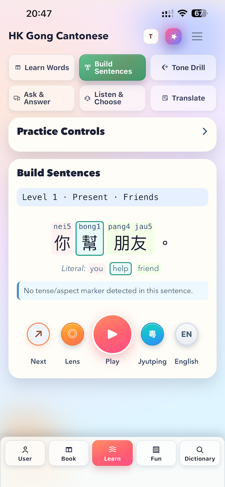

One or two taps
Most learning areas are close to the surface, so you spend time studying instead of digging through menus.
Practical Cantonese Learning
你好，我想學廣東話。 HKGong turns scattered Cantonese resources into one complete learning system: sounds, words, sentence structure, dictionary, examples, characters, listening, writing, and practice.

Open structure, focused study
You can follow a level order if you want, but the app does not trap you inside one path. Go to the exact thing you need today, then come back when you are ready: sounds, sentence patterns, verbs, questions, dictionary, listening, characters, or games. The point is not to hide the language inside a course; it is to keep the important parts close enough to connect.
Most learning areas are close to the surface, so you spend time studying instead of digging through menus.
Follow the levels, or jump directly into sounds, sentence building, listening, dictionary, or characters.
Practice blocks are compact, but they connect sound, meaning, structure, examples, and repetition.
Every section is meant to train a real part of Cantonese, not just keep you tapping.
The problem HKGong solves
Cantonese information is often split across pronunciation charts, vocabulary lists, dictionaries, grammar notes, videos, character resources, and practice tools. HKGong brings those fragments into one practical order, so a learner can move from hearing a sound to understanding a word, building a sentence, and practicing it again.
Jyutping, tones, playback, and sound practice sit beside the words they explain.
Characters, dictionary lookup, translations, and examples help vocabulary feel usable.
Verbs, time words, questions, particles, and word order are taught as patterns you can revisit.
Listening, writing, sentence building, characters, and useful games turn study into repetition.
Inside the app
Some days you need to hear a sound carefully. Some days you want to check a word, build a sentence, review characters, or do a few minutes of lighter practice. HKGong is organized around those real study moments.
Sentence work shows meaning, parts, order, and repeated patterns so learners can understand what they are seeing.
Open the app for one focused task: pronunciation, a word set, a sentence drill, listening, writing, or review.
Games are there to reinforce sounds, words, and characters, so lighter practice still supports real learning.
Premium tools help advanced learners compare words, sounds, and structures across Cantonese and Mandarin.
The app supports learners who think in English, Catalan, French, Filipino, Indonesian, Malay, Spanish, German, and more.
Free Cantonese Starter PDF
Join the email list for a free beginner guide covering Jyutping, tones, essential sentence order, and the first study path inside HKGong. No spam, just occasional practical tips for studying Cantonese with the app.
Start with HKGong
HKGong is available on iPhone and iPad. Google Play support is planned, but not live yet. The free version is useful by itself, and Premium unlocks the complete experience.